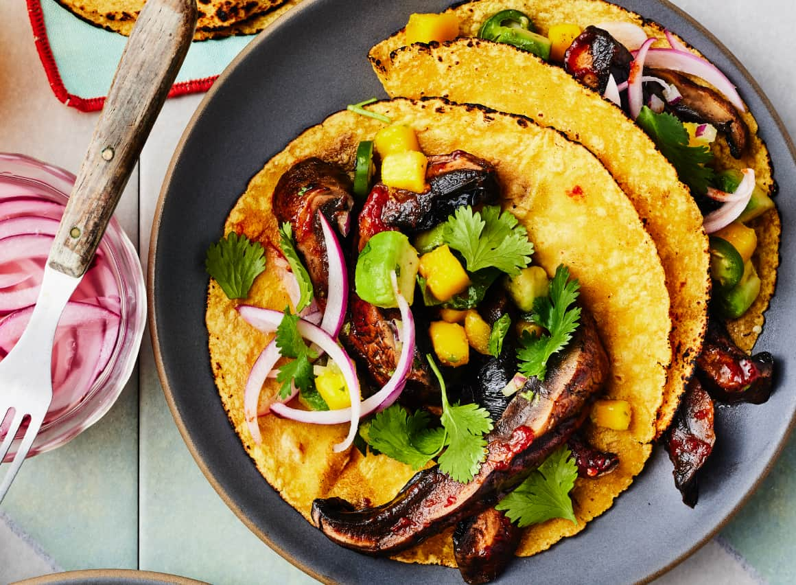
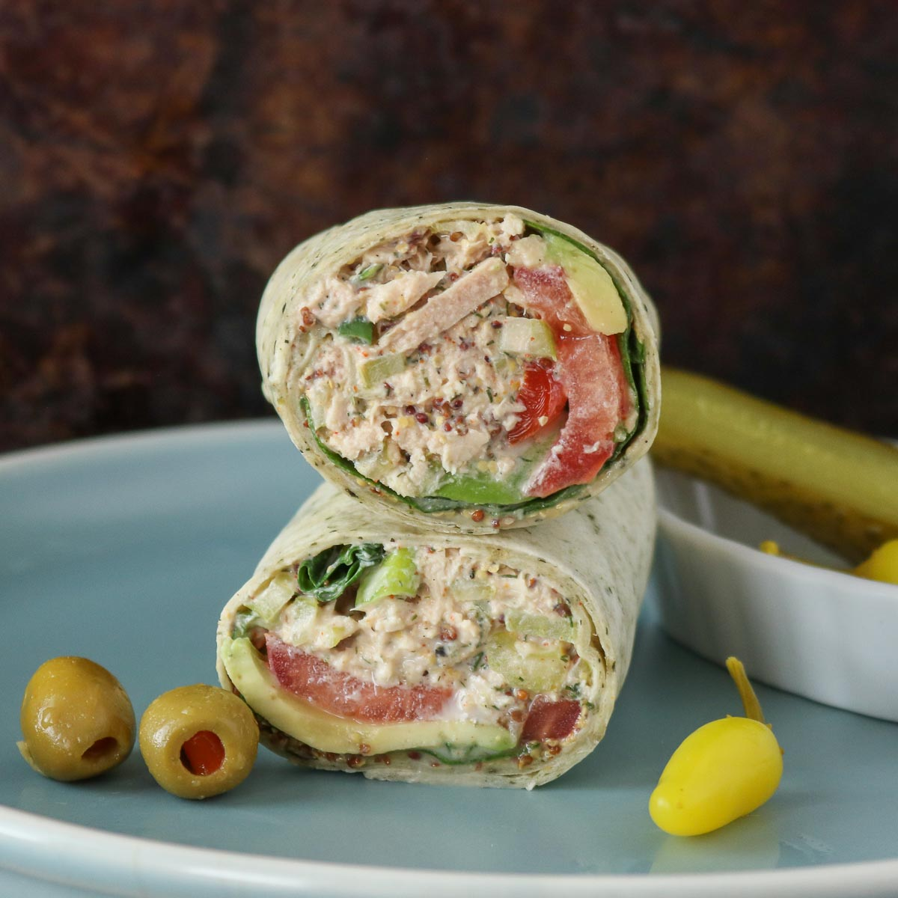

Overview: fast, balanced, doable
- Aim for a simple plate: protein + carb + veg + flavor.
- Keep a small pantry: eggs, canned beans, rice/pasta, onion/garlic powder, soy sauce, chili flakes, frozen veg.
- Cook once, eat twice: make 2 portions and box one for tomorrow.
10-Minute Meals
Skillet Omelette
Ingredients
- 3 eggs
- 1 tbsp milk
- 1 tsp butter
- 1 tomato, finely chopped
- 2 tbsp grated cheddar
- 1 tbsp chopped fresh parsley (or 1 tsp dried)
- 2 thin slices ham (optional)
- Salt & pepper
Method
- Beat eggs with milk, salt, and pepper.
- Heat butter in a pan (medium). Pour in eggs.
- As edges set, draw them to the centre with a spatula, tilting the pan so runny egg fills gaps.
- Scatter tomato, most of the cheese, and parsley over the top (add ham if using).
- Cook 1 more minute until just set; loosen edges, fold, and slide onto a plate.
- Top with the remaining cheese and parsley; serve.
Tips
- Crack eggs into a bowl to mix—don’t crack straight into the pan.
- If shell pieces fall in, use a half eggshell to scoop them out.
Easy chicken noodle soup

Ingredients
- 500 ml chicken stock + 200 ml water
- 1 garlic clove, sliced · small piece fresh ginger, sliced
- 1 cooked skinless chicken breast, shredded
- 100 g dried fine egg noodles
- 3 stems tenderstem broccoli or 100 g frozen peas
- 2–3 tsp reduced-salt soy sauce
- 3 spring onions, thinly sliced
- Handful beansprouts
- Chilli oil or sesame oil (optional)
Method
- Simmer stock + water with garlic & ginger over low heat for 5 minutes.
- Remove garlic & ginger. Add shredded chicken and noodles.
- Simmer 2–3 minutes until noodles are tender. Add broccoli/peas, spring onions and soy; simmer 1 minute.
- Stir in beansprouts for 30 seconds. Serve with a drizzle of chilli or sesame oil.
One-Pan Dinners (15–20 min)
Honey-Garlic Glazed Salmon

- Time: ~15 minutes
- Serves: 2
Ingredients
- 2 salmon fillets (150–180 g each), patted dry
- 1 tbsp olive oil or butter
- 2 cloves garlic, minced
- 2 tbsp honey
- 1 tbsp soy sauce (or tamari)
- 1 tbsp lemon juice (or a few lemon slices)
- Salt & pepper; chili flakes (optional)
Method
- Season salmon with salt and pepper.
- Heat oil in a pan over medium-high. Place salmon skin-side down; sear 3–4 min.
- Flip; add garlic and cook 30 sec.
- Stir in honey, soy, and lemon; simmer 1–2 min, spooning glaze over salmon.
- Cook until salmon flakes with a fork. Optional: broil 1–2 min for extra caramelization.
- Serve with rice/greens and remaining glaze.
Tip: If the glaze thickens too much, loosen with a tablespoon of water.
Air Fryer Beef & Broccoli

Takeout-style dinner in minutes. Tender beef, crisp broccoli, glossy sweet–savory sauce.
Ingredients
- Sauce: 1/2 cup low-sodium chicken broth; 3 Tbsp soy sauce; 2 Tbsp light brown sugar; 1 Tbsp cornstarch; 1 tsp Shaoxing wine or dry sherry; 1 tsp toasted sesame oil; black pepper.
- Beef & veg: 1 lb flank/skirt steak, very thinly sliced; 2 cloves garlic, minced; 2 tsp minced fresh ginger; 12 oz broccoli florets; 2 Tbsp vegetable oil; sliced scallions + sesame seeds; steamed rice for serving.
Steps
- Whisk all sauce ingredients in a heatproof bowl; microwave on high, stirring once, until thickened, about 2 minutes. Stir in sesame oil and a few grinds of pepper.
- Toss sliced beef with garlic, ginger, 1 Tbsp soy sauce, and cornstarch; add broccoli and oil and toss to coat.
- Air fry in a single layer at 400°F (200°C) until beef is just cooked and broccoli is tender with golden spots, 8–10 minutes (cook in batches if needed).
- Scrape cooked beef and broccoli into the bowl with sauce and toss to coat. Top with scallions and sesame; serve with rice.
Microwave / No-Cook
Mushroom Tacos

Ingredients
- 8–10 oz (225–300 g) mushrooms (portobello or cremini), sliced
- 1 tbsp olive oil
- 1 tsp chili powder · 1/2 tsp cumin · 1/2 tsp smoked paprika
- Salt & pepper · juice of 1/2–1 lime
- 6–8 small tortillas (corn or flour)
- Toppings: avocado/guacamole, red onion, cilantro, salsa, shredded cabbage
Steps
- Heat a pan over medium-high, add oil, sauté mushrooms 5–7 min until browned.
- Stir in spices, salt, and lime juice; cook 30 seconds to coat.
- Warm tortillas in a dry pan or microwave.
- Fill tortillas with mushrooms and your toppings. Serve with extra lime.
Tuna Yogurt Wrap (no-cook, 5 minutes)

Ingredients (1 large wrap)
- 1 large tortilla
- 1 can tuna, drained
- 2–3 tbsp Greek yogurt (or plain yogurt)
- 1 tsp lemon juice · salt & pepper
- ¼ cup diced cucumber or celery · a little red onion or pickles
- Leafy greens (lettuce/spinach)
Steps
- Mix tuna + yogurt + lemon + diced veg; season with salt/pepper.
- Lay tortilla flat; add greens; spread tuna mixture.
- Roll tightly, tucking in sides; slice in half.
- Optional: toast in a dry pan 1–2 min/side for a warm, crisp wrap.